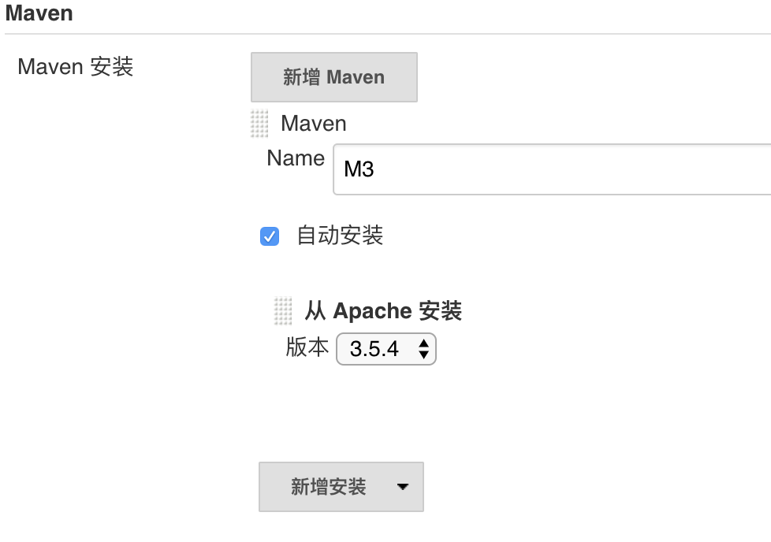
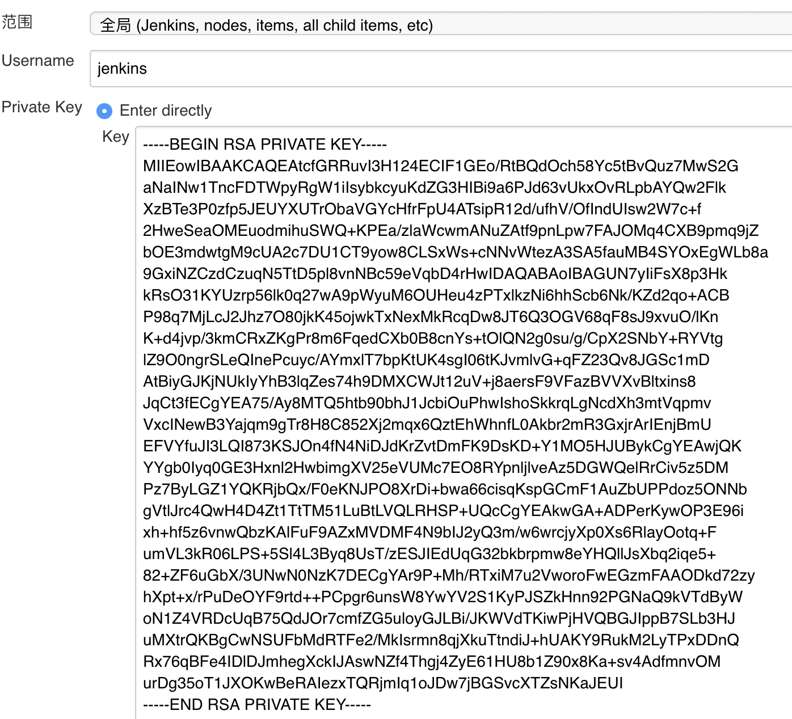
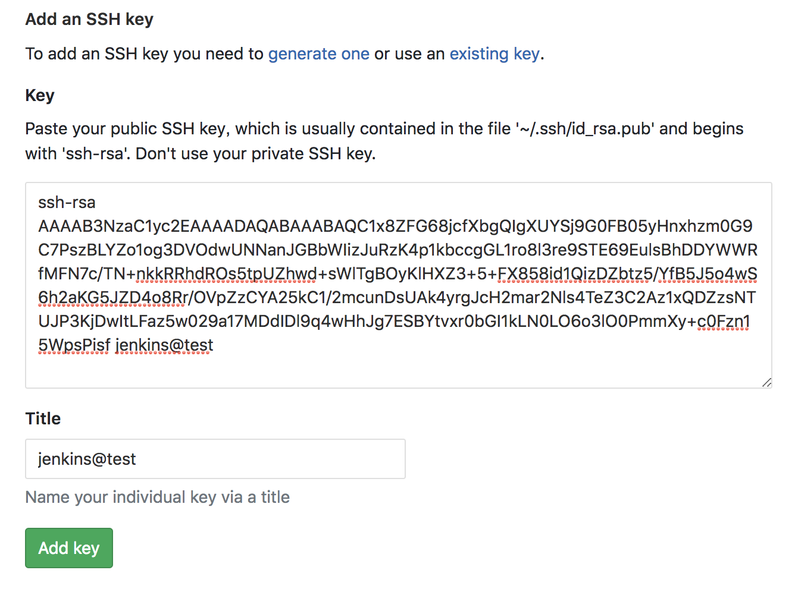
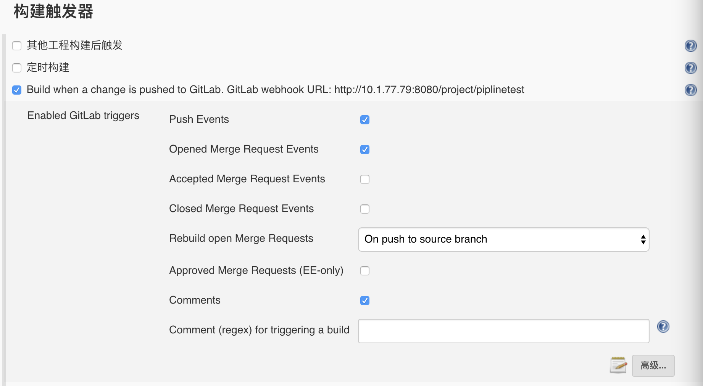
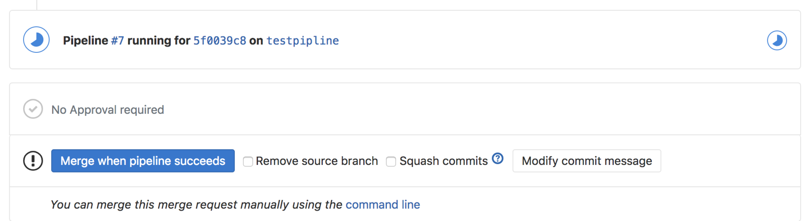

- 00 开篇词 量身定制你的持续交付体系.md
- 01 持续交付到底有什么价值？.md
- 02 影响持续交付的因素有哪些？.md
- 03 持续交付和DevOps是一对好基友.md
- 04 一切的源头，代码分支策略的选择.md
- 05 手把手教你依赖管理.md
- 06 代码回滚，你真的理解吗？.md
- 07 “两个披萨”团队的代码管理实际案例.md
- 08 测试环境要多少？从现实需求说起.md
- 09 测试环境要多少？从成本与效率说起.md
- 10 让环境自己说话，论环境自描述的重要性.md
- 11 “配置”是把双刃剑，带你了解各种配置方法.md
- 12 极限挑战，如何做到分钟级搭建环境？.md
- 13 容器技术真的是环境管理的救星吗？.md
- 14 如何做到构建的提速，再提速！.md
- 15 构建检测，无规矩不成方圆.md
- 16 构建资源的弹性伸缩.md
- 17 容器镜像构建的那些事儿.md
- 18 如何做好容器镜像的个性化及合规检查？.md
- 19 发布是持续交付的最后一公里.md
- 20 Immutable！任何变更都需要发布.md
- 21 发布系统一定要注意用户体验.md
- 22 发布系统的核心架构和功能设计.md
- 23 业务及系统架构对发布的影响.md
- 24 如何利用监控保障发布质量？.md
- 25 代码静态检查实践.md
- 26 越来越重要的破坏性测试.md
- 27 利用Mock与回放技术助力自动化回归.md
- 28 持续交付为什么要平台化设计？.md
- 29 计算资源也是交付的内容.md
- 30 持续交付中有哪些宝贵数据？.md
- 31 了解移动App的持续交付生命周期.md
- 32 细谈移动APP的交付流水线（pipeline）.md
- 33 进阶，如何进一步提升移动APP的交付效率？.md
- 34 快速构建持续交付系统（一）：需求分析.md
- 35 快速构建持续交付系统（二）：GitLab 解决代码管理问题.md
- 36 快速构建持续交付系统（三）：Jenkins 解决集成打包问题.md
- 37 快速构建持续交付系统（四）：Ansible 解决自动部署问题.md
- 持续交付专栏特别放送 答疑解惑.md
- 持续交付专栏特别放送 高效学习指南.md
- 结束语 越痛苦的事，越要经常做.md
36 快速构建持续交付系统（三）：Jenkins 解决集成打包问题
在上一篇文章中, 我和你一起利用开源代码平台GitLab和代码静态检查平台SonarQube实现了代码管理平台的需求。那么，我今天这篇文章的目的，就是和你一起动手基于Jenkins搭建集成与编译相关的系统。
Jenkins的安装与配置
Jenkins这个开源项目，提供的是一种易于使用的持续集成系统，将开发者从繁杂的集成工作中解脱了出来，使得他们可以专注于更重要的业务逻辑实现。同时，Jenkins还能实时监控集成环境中存在的错误，提供详细的日志文件和提醒功能，并以图表的形式形象地展示项目构建的趋势和稳定性。
因此，在携程，我们选择Jenkins作为了代码构建平台。而为了用户体验的一致性，以及交付的标准化，携程针对Java、.net等用到的主要语言，为开发人员封装了对于Jenkins的所有操作，并在自研的持续交付平台中实现了整个持续交付的工作流。
而如果是第一次搭建持续交付系统，我建议你不用像携程这样进行二次开发，因为Jenkins本身就可以在持续交付的构建、测试、发布流程中发挥很大的作用，完全可以满足你的搭建需求。而且，它提供的Pipeline功能，也可以很好地驱动整个交付过程。
所以，在这篇文章中，我就以Jenkins为载体，和你分享如何搭建集成与编译系统。
第一步，安装Jenkins
为了整个持续交付体系的各个子系统之间的环境的一致性，我在这里依然以Centos 7虚拟机为例，和你分享Jenkins 2.138（最新版）的安装过程。假设，Jenkins主机的IP地址是10.1.77.79。
-
安装Java环境
yum install java-1.8.0-openjdk-devel
-
更新rpm源，并安装Jenkins 2.138
rpm --import https://pkg.jenkins.io/redhat-stable/jenkins.io.key wget -O /etc/yum.repos.d/jenkins.repo https://pkg.jenkins.io/redhat-stable/jenkins.repo yum install jenkins
然后，我们就可以通过 “http://10.1.77.79” 访问Jenkins了，整个安装过程很简单。
当然，Jenkins还有其他的安装方式，你可以参考 https://jenkins.io/doc/book/installing/。
第二步，配置Jenkins对GitLab的访问权限
Jenkins安装完成之后，我们还需要初始化安装Jenkins的一些基础配置，同时配置Jenkins对GitLab的访问权限。
在新版的Jenkins中，第一次启动时会有一个初始化向导，引导你设置用户名、密码，并安装一些插件。
在这里，我推荐你勾选“安装默认插件”，用这种方式安装Pipline、 LDAP等插件。如果这个时候没能选择安装对应的插件，你也可以在安装完成后，在系统管理->插件管理页面中安装需要的插件。
那么如何才能使编译和GitLab、SonarQube整合在一起呢？这里，我以一个后台Java项目为例，对Jenkins做进一步的配置，以完成Jenkins和GitLab、SonarQube的整合。这些配置内容，主要包括：
-
配置Maven；
-
配置 Jenkins钥匙；
-
配置GitLab公钥；
-
配置Jenkins GitLab插件。
接下来，我就逐一和你介绍这些配置内容吧。
- 配置Maven
进入系统管理->全局工具配置页面，安装Maven，并把名字设置为M3。如图1所示。

图1 Maven配置
这样配置好Maven后，Jenkins就会在第一次使用GitLab时，自动安装Maven了。
- 配置 Jenkins钥匙
配置Jenkins钥匙的路径是：凭据->系统->全局凭据->添加凭据。
然后，将你的私钥贴入并保存。 如图2所示。

图2 Jenkins钥匙配置
- 配置GitLab公钥
在GitLab端, 进入 http://{Gitlab Domain}/profile/keys，贴入你的公钥并保存，如图3所示。

图3 GitLab公钥配置
通过配置Jenkins钥匙，以及配置GitLab公钥两步，你就已经完成了Jenkins对GitLab仓库的访问权限配置。
- 配置Jenkins GitLab插件
Jenkins的GitLab-plugin 插件的作用是，在代码提交和Merge Request时触发编译。安装这个插件的方法是：进入Jenkins的系统管理->插件管理页面，选择 GitLab Plugin 安装。
Jenkins重启后，选择凭据->系统->全局凭据->添加凭据，再选择GitLab API Token。然后，将 http://10.1.77.79/profile/personal_access_tokens中新生成的access token贴入GitLab API Token，并保存。
关于GitLab-plugin插件的更详细介绍，你可以参考它的官方文档。
完成了这四步的必要配置之后，你就可以开始使用Jenkins Pipline构建集成与编译系统的工作流了。
使用Jenkins Pipeline构建工作流
在使用Jenkins搭建集成和编译系统前，我们先一起回忆一下我在《快速构建持续交付系统（一）：需求分析》中提到的关于集成与编译系统的需求：
我们需要在代码push之后，自动触发编译和集成。如果编译成功，这套系统还要能继续处理自动化测试和部署。并且，在整个过程中，这个系统要能自动地适配三种不同的代码平台和交付产物。
那么，如何才能驱动整个事务的顺利完成呢？这里，我们就需要用到大名鼎鼎的Jenkins Pipeline了。
Jenkins Pipeline介绍
Jenkins Pipeline是运行在Jenkins上的一个工作流框架，支持将原先运行在一个或多个节点的任务通过一个Groovy脚本串联起来，以实现之前单个任务难以完成的复杂工作流。并且，Jenkins Pipline支持从代码库读取脚本，践行了Pipeline as Code的理念。
Jenkins Pipeline大大简化了基于Jenkins的开发工作。之前很多必须基于Jenkins插件的二次开发工作，你都可以通过Jenkins Pipeline实现。
另外，Jenkins Pipeline大大提升了执行脚本的可视化能力。
接下来，我就和你分享一下如何编写Jenkins Pipeline，以及从代码编译到静态检查的完整过程。这个从代码编译到静态检查的整个过程，主要包括三大步骤：
- 第一步，创建Jenkins Pipeline任务；
- 第二步，配置Merge Request的Pipeline验证；
- 第三部，编写具体的Jenkins Pipeline脚本。
第一步，创建 Jenkins Pipeline任务
首先，在Jenkins中创建一个流水线任务，并配置任务触发器。详细的配置，如图4所示。

图4 触发器创建
然后，在GitLab端配置Webhook。配置方法为：在GitLab项目下的settings->Integrations下配置并勾选 “Merge request events”选项。
经过这些配置后， 每次有新的Merge Request被创建或更新，都会触发Jenkins的Pipeline，而再由自定义的Pipeline脚本完成具体任务，比如代码扫描任务。
第二步，配置Merge Request 的 Pipeline 验证
在驱动代码静态扫描之后，我们还要做一些工作，以保证扫描结果可以控制Merge Request的行为。
进入settings->Merge Request页面, 勾选“Only allow Merge Requests to be merged if the pipeline succeeds”。这个配置可以保证，在静态检查任务中，不能合并Merge Request。
第三步，编写具体的Pipeline脚本
然后我们再一起看一下为了实现我们之前的需求，即获取代码-编译打包-执行Sonar静态代码检查和单元测试等过程。Jenkins端的Pipeline脚本如下，同时我们需要将该脚本配置在Jenkins中。
node {
def mvnHome
#修改Merge Request的状态，并checkout代码
stage('Preparation') { // for display purposes
mvnHome = tool 'M3'
updateGitlabCommitStatus name: 'build', state: 'running'
checkout scm
}
#执行Maven命令对项目编译和打包
stage('Build') {
echo 'Build Start'
// Run the maven build
sh "'${mvnHome}/bin/mvn' -Dmaven.test.skip=true clean package"
}
#启动sonar检查，允许junit单元测试，获取编译产物，并更新Merge request的状态
stage('Results') {
// Run sonar
sh “'${mvnHome}/bin/mvn' org.sonarsource.scanner.maven:sonar-maven-plugin:3.2:sonar”
junit '**/target/surefire-reports/TEST-*.xml'
archive 'target/*.war'
updateGitlabCommitStatus name: 'build', state: 'success'
}
}
在这个脚本中，一共包括了3个stage。
第一个stage：
从GitLab中获取当前Merge Request源分支的代码；同时，通Jenkins GitLab插件将Merge Request所在的分支的当前commit状态置为running。这个时候，我们可以在GitLab的页面上看到Merge Request的合并选项已经被限制了，如图5所示。

图5 GitLab Merge Request
第二个stage：
比较好理解，就是执行Maven命令对项目编译和打包。
第三个stage：
通过Maven调用Sonar的静态代码扫描，并在结束后更新Merge Request的commit状态，使得Merge Request允许被合并。同时将单元测试结果展现在GitLab上。
通过以上这三步，我们已经完整地实现了这个集成和编译系统的需求，即：在GitLab端创建Merge Request时，预先进行一次代码扫描，并保证在代码扫描期间，代码无法被合并入主干分支，只有扫描通过后，代码才能被合并。
当然，这个示例的Pipline的脚本还比较简单。但掌握了基本的思路之后，在这个基础上，我们还可以添加更多的改进代码，达到更多的功能。
比如，我们在Sonar检测之后，可以调用Sonar的API获取静态检查的详细信息；然后，调用GitLab的API，将静态检查结果通过comment的方式，展现在GitLab的Merge Request页面上，从而使整个持续集成的流程更加丰满和完整。
多语言平台构建问题
上面的内容，我以Java后台项目为例，详细介绍了Jenkins Pipeline的创建。 但是，在实际的工作中，整个编译平台需要支持的是多种语言。所以，我要再和你分享下多语言情况下，集成和编译系统可能会碰到的问题。
在这里，我将多语言栈情况下，集成与编译系统常会遇到的问题，归结为两类：
-
多语言CI流水线的管理；
-
Jenkins Pipeline的管理。
接下来，我们就一起看看，如何解决这两个问题吧。
多语言CI流水线管理
关于如何进行Docker编译和移动端编译的问题，你可以先回顾一下第17篇文章《容器镜像构建的那些事儿》，以及第32篇文章《细谈移动APP的交付流水线》的内容，并将相关的逻辑Pipeline化。
当然，对于Docker镜像和iOS App这两种不同的交付流水线，你还需要特别关注的几个点，我再带你回顾一下。
第一，Docker镜像
对于构建docker镜像，我们需要在静态检查之后增加一个stage，即：把Dockerfile放入代码仓库。Dockerfile包括两个部分：
-
base镜像的定义，包括Centos系统软件的安装和Tomcat环境的创建；
-
war包部分，将Jenkins当前工作目录下的war包复制到Docker镜像中，保证每次Docker镜像的增量就只有war包这一个构建产物，从而提高Docker镜像的编译速度。
第二，iOS App
而对于iOS应用，需要在修改Build stage的逻辑中， 增加fastlane shell命令。详细步骤可以参考第32篇文章《细谈移动APP的交付流水线》的内容，我就不再此赘述了。
特别需要注意的是，因为iOS机器只能在OS X环境下编译，所以我们需要在Pipeline脚本的node上指定使用Jenkins的Mac Slave。
Jenkins Pipeline的管理
原则上，对于每个项目，你都可以配置一个Jenkins Pipeline任务。但，当我们需要维护的平台越来越多，或者项目处于多分支开发的状态时，这种做法显然就不合适了，比如：
-
每个项目组的开发人员都需要调整Jenkins的脚本，很容易造成代码被错误更改；
-
当需要回滚代码时，无法追述构建脚本的历史版本。
在专栏的第20篇文章《Immutable！任何变更都需要发布》中，我曾提到，环境中的任何变更都需要被记录、被版本化。
所以，在Jenkins Pipeline的过程中，更好的实践是将Pipeline的脚本文件Jenkinsfile放入Git的版本控制中。每次执行Jenkins Job前，先从Git中获取到当前仓库的Pipeline脚本。
这样，不仅降低了单个项目维护Jenkins job的成本，而且还标准化了不同语言平台的构建，从而使得一套Jenkins模板就可以支持各个语言栈的编译过程。
多平台构建产物管理
除了多语言栈的问题外，我们还会碰到的另一个问题是，构建产物的管理问题。
当开发语言只是Java的时候，我们管理的构建产物主要是jar包和war包，而管理方式一般就是把Nexus和Artifactory作为代码管理仓库。
而引入一种新的部署工具后，我们就需要额外的管理方式。比如，引入Docker镜像后，我们需要引入用于存储和分发Docker镜像的企业级Registry服务器Harbor。
所以，为了保证整个系统工具链的一致性，我们需要做到:
-
产物的统一版本化，即无论是Java的war包或是.net程序的压缩包，都需要支持与上游的编译系统和下游的部署系统对接。
-
对于同一个版本的多个构建产物，需要将它们和代码的commit ID实现有效的关联。比如，对于同一份Java代码生成的war包和Docker镜像，我们可以通过一个版本号把它们关联起来。
但是，这两种做法会使得整个持续交付系统的研发复杂度更高。
所以，携程最终选择的方案是：标准化先行。也就是说，保证不同语言的发布有且只有一套统一的流水线，并通过在编译系统的上层再封装一层自研系统，以达到不同的物理构建产物，可以使用同一个逻辑版本号进行串联管理的目的。
而针对这个问题，业界普遍采用的解决方案是：用Artifactory或者Nexus对构建产物进行统一管理。Artifactory和Nexus都包括了开源OSS版和付费专业版。
另外，你可能在选择构建产物仓库的时候会有这样的疑惑：我到底应该选择哪个仓库呢。那么，我就再和你分享一下我之前调研得到的一些结论吧。
-
如果你需要管理的产物只是Java相关的Maven或者Gradle，那么Nexus或者Artifactory都能工作得很好，你可以随意选择。
-
如果你有管理多语言构建产物的需求，而又没有付费意愿的话，我建议你使用Nexus 3的OSS版本。Nexus 3的OSS版本支持10多种主流编程语言。而Artifactory的OSS版本能支持的编译工具就非常有限，只有Gradle、Ivy、Maven、SBT这四种。
-
如果你有管理多语言构建产物的需求，而且也接受付费的话，我推荐你使用Artifactory的付费版本。Artifactory的付费版本中，包含了很多头部互联网公司的背书方案，功能相当丰富。而且，如果你所在公司的开发人员比较多的话，Artifactory按实例付费的方式也更划算。
好了，到此为止，我们的集成构建系统也搭建完成了。加上我们上一篇文章中一起搭建的代码管理平台，我们已经可以跑完三分之二的持续交付过程了。
所以，在接下来的最后一篇文章中，我将会为你介绍关于自动化测试和发布的一些实践，这样就能完整地实现我们对持续交付系统的需求了。
总结与实践
通过今天这篇文章，我和你分享了如何快速安装和配置一套有效的Jenkins系统，以及如何打通Jenkins与GitLab之间的访问。这样就可以使这套基于Jenkins的集成与编译系统与我们在上一篇文章中基于GitLab搭建的代码管理平台相呼应，从而满足了在代码平台push代码时，驱动集成编译系统工作的需求。
当然，在今天这篇文章中，我还详细分析了Jenkins Pipeline的创建，以及与Merge Request的联动合作配置，同时提供了一个Pipeline脚本的例子，帮助你理解整个Pipeline的工作原理。这样你就可以根据自己的具体需求，搭建起适合自己的持续交付流水线了。
除此之外，我还提到了关于多语言平台和多平台构建产物的问题。对于这种复杂的问题，我也给出了解决问题的一些行之有效的办法。比如，使用统一逻辑版本进行产物管理等。
这样，通过搭建Jenkins系统，构建Pipeline流水线，以及处理好构建产物这三部曲，相信你已经可以顺利构建起一套适合自己的集成与编译系统了。
那么，接下来，建议你按照我今天的分析自己动手试一下，看看整个搭建过程是否顺利。如果你在这个过程中碰到了任何问题，欢迎你给我留言一起讨论。
© 2019 - 2023 Liangliang Lee. Powered by Vert.x and hexo-theme-book.